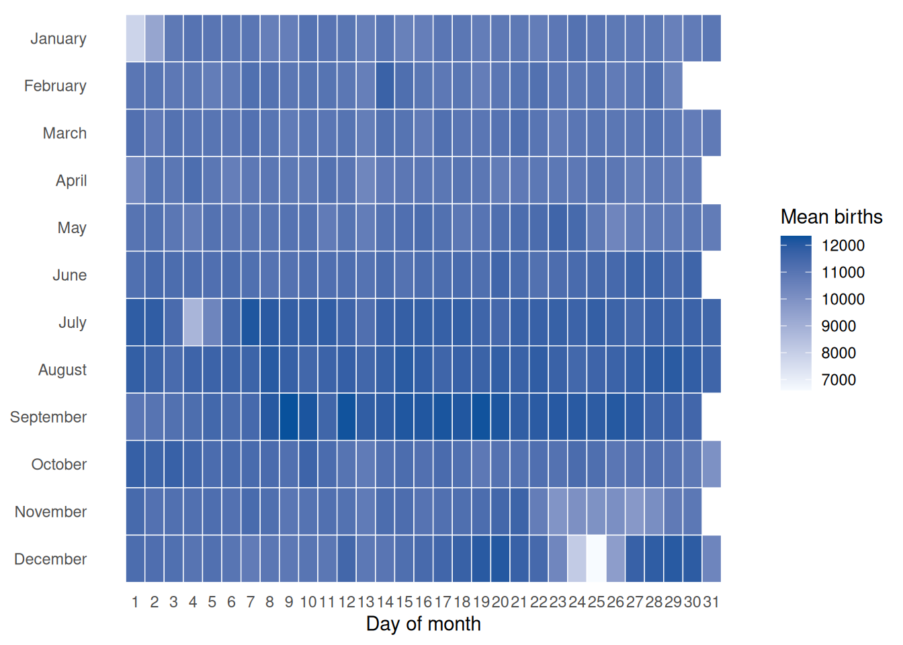
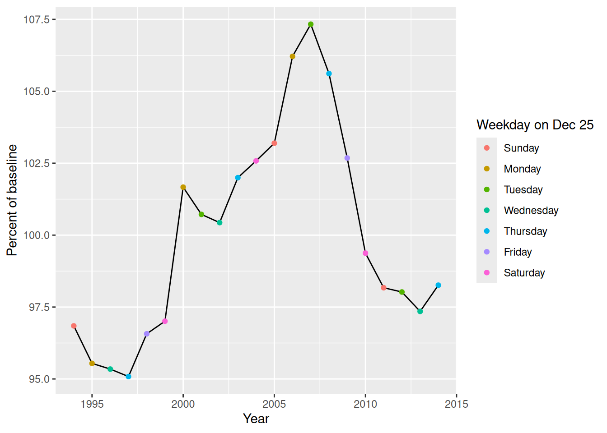

This heatmap shows mean births for each calendar date across the years in the dataset.
library(readxl)library(dplyr)
Attaching package: 'dplyr'
The following objects are masked from 'package:stats':
filter, lag
The following objects are masked from 'package:base':
intersect, setdiff, setequal, union
library(ggplot2)births_by_date <-read_excel("data/us_births_1994_2014.xlsx") |>group_by(month, date_of_month) |>summarize(mean_births =mean(births), .groups ="drop") |>mutate(month =factor(month, levels =1:12, labels = month.name))ggplot(births_by_date, aes(x = date_of_month, y = month, fill = mean_births)) +geom_tile(color ="white", linewidth =0.25) +scale_x_continuous(breaks =1:31, position ="bottom") +scale_y_discrete(limits =rev(month.name)) +scale_fill_gradient(low ="#f7fbff", high ="#08519c", name ="Mean births") +labs(x ="Day of month", y =NULL) +theme_minimal() +theme(panel.grid =element_blank())

This chart shows annual births as a percentage of the mean annual births across all years.
births_by_year <-read_excel("data/us_births_1994_2014.xlsx") |>group_by(year) |>summarize(annual_births =sum(births), .groups ="drop") |>mutate(pct_of_baseline = annual_births /mean(annual_births) *100,dec25_weekday =factor(weekdays(as.Date(paste(year, "12-25", sep ="-"))),levels =c("Sunday", "Monday", "Tuesday", "Wednesday", "Thursday", "Friday", "Saturday") ) )ggplot(births_by_year, aes(x = year, y = pct_of_baseline)) +geom_line() +geom_point(aes(color = dec25_weekday)) +labs(x ="Year", y ="Percent of baseline", color ="Weekday on Dec 25")

This chart shows mean daily birth-count residuals by calendar date. Each day’s births are compared with that year’s average daily births, then averaged across years.